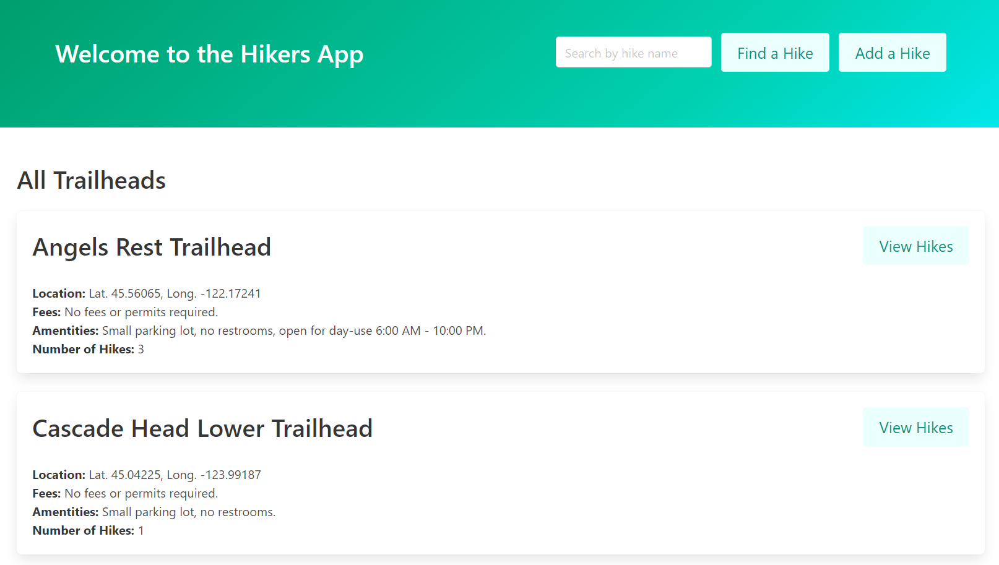

Single-page web app using JavaScript
The Hikers App 2.0 is actually two seperate apps the work together: an API on the backend built with Ruby on Rails, and a frontend app built with JavaScript to handle everything on the client-side—i.e., DOM manipulation such as rendering, updating, and handling form submissions. The app uses asynchronous JavaScript and JSON to communicate with the backend.
For this project, I opted to do a 2.0 version of one of my other portfolio project, the Hikers App. In this version, I decided to make a pared-down site that would include an index of all trailheads, nested indices of hikes at each of those trailheads, and a form for users to create a new hike.